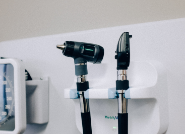

Современная стоматология направлена на сохранение любого, даже самого проблемного, зуба. Помимо комплексной терапии важная роль в этом вопросе отводится хирургии. Специальные зубосохраняющие операции используются для лечения не только натуральных зубов, но и десен. Это эффективный способ, позволяющий в большинстве случаев избежать удаления и предотвратить развитие воспалительного процесса в полости рта.
ПОХОЖИЕ СТАТЬИ.

Почему нужно вовремя
протезировать зубы?
Современная стоматология направлена на сохранение любого, даже самого проблемного, зуба.